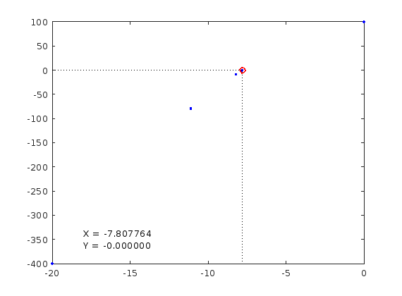
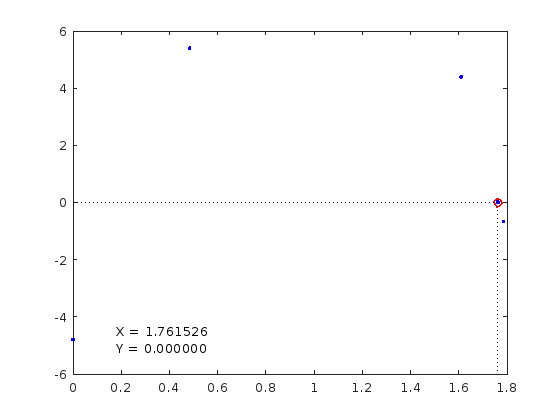

Solving for zero
A special case optimization problem is finding input values s.th. a function evaluates to 0. This is closely related to the other optimization practices. It is often called "solving" a function, "root finding," or simply "zero finding."
Contents
Second title
A simple but powerful algorithm for zero finding is the Newton-Raphson algorithm (sometimes just called Newton's). The algorithm proceeds along these steps:
1. Start
2. Define function as f(x)
3. Define derivative of function as g(x)
4. Input: a. Initial guess x0 b. Tolerable Error e c. Maximum Iteration N
5. Initialize iteration counter step = 1
6. Do If g(x0) = 0 Print "Mathematical Error" Stop End If
x1 = x0 - f(x0) / g(x0) x0 = x1
step = step + 1
If step > N Print "Not Convergent" Stop End If
While abs f(x1) > e
7. Print root as x1
8. Stop
One reason not everyone likes the NR algorithm is that it requires the user to provide the first derivative of the objective function as a function. There are ways around this, but let's look at a scenario where we know the first derivative easily.
objective = @(x) -x.^2 + 5*x + 100; derivative = @(x) -2*x + 5; nr = NewtonRaphson(objective, derivative); nr.Solve(); disp(nr) root = nr.Solution
NewtonRaphson object
^ Objective = @(x)-x.^2+5*x+100
^ Derivative = @(x)-2*x+5
^ CurrentX = -7.807764
^ CurrentY = -0.000000
^ StepCount = 7
^ TolerableError = 0.000000
root =
-7.8078
 Note that the NR algorithm finds you a solution. There may be many!
objective = @(x) 5 * sin( 2 * pi * x + 5) + x; derivative = @(x) pi * 10 * cos( 2 * pi * x + 5) + 1; nr = NewtonRaphson(objective, derivative); nr.Solve(); disp(nr) root = nr.Solution
NewtonRaphson object
^ Objective = @(x)5*sin(2*pi*x+5)+x
^ Derivative = @(x)pi*10*cos(2*pi*x+5)+1
^ CurrentX = 1.761526
^ CurrentY = 0.000000
^ StepCount = 7
^ TolerableError = 0.000000
root =
1.7615
